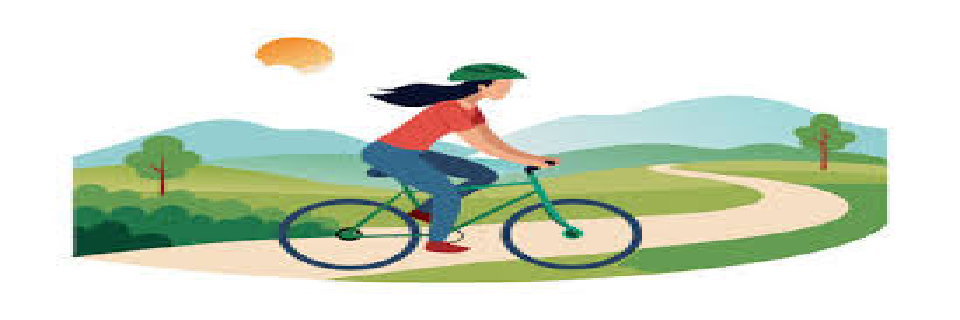

Septembre - Novembre
Durée : 8 Semaines.
Phase : Préparation générale
| Fréquence |
Type d'effort |
Description |
Conseils |
| 2x par semaine |
Endurance / Cardio |
Rythme modéré, Course ou Natation Objectif : 45-60min |
Quelques conseils |
| 2x par semaine |
Renforcement musculaire |
3 séries:
10 Squats , 20 fentes, 1min planche, 15 pompes |
Quelques conseils |
| 1x par semaine |
Souplesse / Mobilité |
Yoga ou stretching pour améliorer la flexibilité et prévenir les blessures. |
Quelques conseils |
Conseils d'Entraînement
Endurance / Cardio
Pas besoin de chercher la performance dès les premières séances
La course comme le vélo c'est très mental donc il faut absolument persévérer quand on a mal
Renforcement musculaire
Prendre le temps de faire les mouvements, plus le mouvement est lent plus il travaille.
Pas besoin de lester pour l'instant c'est le début de la prépa, ça ne sert à rien d'aller trop vite
Décembre - Mai
Durée : 16 Semaines.
Phase : Perfectionnement de l'état général
| Fréquence |
Type d'effort |
Description |
Conseils |
| 1x par semaine |
Endurance longue |
Rythme constant, Course
Objectif : 60-90 min |
Quelques conseils |
| 2x par semaine |
Résistance à l'effort |
Fractionné de haute intensité
5 min échauffement lent
10 rep (30 sec intense - 30 sec lent)
5 min de récup |
Quelques conseils |
| 2x par semaine |
Renforcement musculaire lesté |
3 séries:
15 Squats , 20 fentes, 1'30 planche, 20 pompes |
Quelques conseils |
Conseils d'Entraînement
Endurance longue
C'est surement un exercice pour vous comme pour moi donc éviter de courir à un rythme trop élevé on ne se connait pas sur ces epreuves.
C'est un bon moyen de tester ses limites, une fois initié, essayer de se pousser à bout sur les derniers km.
Résistance à l'effort
L'important est de maintenir un changement de rythme fort entre les phases. Bien se reposer sur les repos et accélérer à 80-90% sur les moments rapides
Ne pas négliger les 5 min d'échauffement et de repos à la fin sinon ca va claquer
Renforcement musculaire lesté
Commencez avec des charges modérées et concentrez-vous sur la forme. Prenez des temps de repos entre les séries et augmentez progressivement la charge lorsque vous vous sentez à l'aise.
Juin - Juillet

Durée : 8 Semaines.
Phase : Prise en main du vélo
Semaine A
| Fréquence |
Type d'effort |
Description |
Conseils |
| 2x par semaine |
Sorties en vélo longues |
1h30-2h à intensité modérée. Focus sur la technique (positionnement, pédalage fluide). |
Quelques conseils |
| 1x par semaine |
Renforcement musculaire ciblé |
Séance avec un focus sur les jambes
3 série : 10 squats, 20 fentes, 16 squats bulgare. |
Quelques conseils |
| 1x par semaine |
Cardio croisé |
Course ou natation pour maintenir l’endurance
Pas de vitesse, 45min |
Quelques conseils |
Semaine B
| Fréquence |
Type d'effort |
Description |
Conseils |
| 1x par semaine |
Fractionnés en vélo |
Sortie soutenue avec accélérations en côtes ou sprints pour améliorer la puissance. |
Quelques conseils |
| 1x par semaine |
Sorties longues |
Sortie de 2h30-3h, travaille sur la gestion d’effort et l’endurance. |
Quelques conseils |
| 1x par semaine |
Renforcement musculaire léger |
Même programme, réduction des charges / répétitions pour éviter de surcharger le corps. |
Quelques conseils |
Conseils d'Entraînement
Sorties en vélo longues
Essayez de maintenir un rythme constant. Privilégiez la régularité et la fluidité du pédalage. N’oubliez pas de vous hydrater régulièrement.
Renforcement musculaire ciblé
Prenez le temps de bien exécuter chaque mouvement. Le focus sur les jambes est important, donc travaillez en profondeur mais n’oubliez pas de vous étirer après pour éviter les blessures.
Cardio croisé
Il est important de varier les exercices pour éviter la monotonie. La course ou la natation doivent rester à un rythme modéré.
Fractionnés en vélo
Ne commencez pas trop fort dès la première série car on a aucun référentiel le but c'est de tenir et de résister mais impossible si on bourrine trop dès le début.
Augmentez progressivement l’intensité des accélérations au fil des séances.
Sorties longues
Concentrez-vous sur la gestion de l’effort et l’endurance. Surveillez votre respiration, on ne cherche pas la perf juste à se faire kiffer donc allez dans des endroits beaux.
Renforcement musculaire léger
Réduisez les charges et les répétitions pour permettre à votre corps de récupérer correctement ce n'est pas le moment de se blesser.
Août - Maillot Jaune
Durée : 3 Semaines.
Phase : Objectif champions du monde
| Fréquence |
Type d'effort |
Description |
Conseils |
| 1x par semaine |
Simulation de course |
100km dans les puys d'Auvergne
Objectif : reproduire notre course, apprendre à rouler ensemble |
Quelques conseils |
| 1x par semaine |
Sortie de 3 ou 4 heures |
Endurance de longue durée |
Quelques conseils |
| Les autres jours |
Repos actif et récupération |
Priorise la récupération avec du stretching, du yoga, et de courtes sorties à faible intensité |
Quelques conseils |
Conseils d'Entraînement
Simulation de course
Le but est de simuler les véritables conditions de course, si c'est en équipe on cherche un effort permanent de groupe, si c'est seul gérer son effort et chercher le chrono
Sortie longue (3-4 heures)
Planifiez vos pauses si besoin s'en fait sentir, et assurez-vous de bien vous hydrater tout au long de la sortie. Conservez un rythme constant pour éviter la fatigue prématurée, ce n'est pas la perf qui intéresse mais de trouver une habitude sur le vélo.
Repos actif et récupération
Varier entres :
- Petites courses légères (pas plus de 30min sur des rythmes tranquille)
- Exercices de yoga / stretching
- Exercices de mobilité